Sách Kết nối tri thức • Học từng bài một theo thứ tự: đọc bài → trả lời câu hỏi gợi nhớ → lật flashcard của chính bài đó. Học hết các bài mới xuống Phần Tổng kết ở cuối trang nhé!
📖 Phần 1 — Học tập (học từng bài)
Nhãn trên mỗi bài cho biết bài đó thuộc phần nào: Giữa kì 1 • Sau giữa kì • Mở rộng học kì 1 (nhiều trường dạy sang đầu học kì 2 — cứ học theo thứ tự trên lớp của em) • Học kì 2 (Bài 11–19, theo thứ tự sách giáo khoa).
👀 Chế độ xem:
⭐ Ôn giữa kì 1
Bài 1. Lịch sử là gì? Vì sao cần học lịch sử?
🕵️ Tưởng tượng em là một thám tử: căn phòng không còn ai, nhưng trên bàn có một chiếc trống đồng cổ, một cuốn sách cũ và bà đang kể chuyện ngày xưa… Chỉ từ ba "manh mối" đó, em có thể dựng lại cả một thời đã qua!
Lịch sử là tất cả những gì đã diễn ra trong quá khứ của con người và xã hội loài người.
Học lịch sử để: biết cội nguồn của gia đình, dân tộc; rút bài học từ quá khứ cho hôm nay; thêm yêu quê hương, đất nước.
Muốn biết quá khứ, ta dựa vào tư liệu lịch sử — có 3 loại:
• Tư liệu hiện vật: trống đồng, rìu đá, đồ gốm, di tích…
• Tư liệu chữ viết: sử sách, bia đá, văn bản cổ…
• Tư liệu truyền miệng: truyền thuyết, truyện dân gian được kể lại qua nhiều đời.
➕ Kiến thức bổ sung — biết thêm để làm được bài tập: Muốn tìm hiểu lịch sử, em hãy đọc sách lịch sử 📚, tham quan bảo tàng và di tích 🏛️, nghe ông bà kể chuyện ngày xưa. Đó là những cách làm "thám tử quá khứ" thú vị nhất!
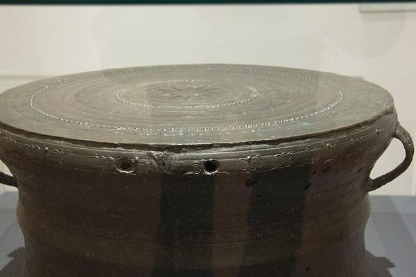
🥁 Trống đồng Đông Sơn — tư liệu hiện vật. Nhớ là: nhìn trống đồng là "thấy" được người xưa đúc đồng giỏi thế nào. (Tranh minh họa theo phong cách ảnh thật)🪨 Bia Tiến sĩ ở Văn Miếu (Hà Nội) — tư liệu chữ viết khắc trên đá, ghi tên những người đỗ đạt từ hàng trăm năm trước. Nhớ là: chữ khắc trên đá thì "sống" rất lâu! (Tranh minh họa theo phong cách ảnh thật)
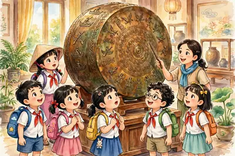
🏛️ Tham quan bảo tàng lịch sử — tận mắt ngắm hiện vật như trống đồng là cách "gặp gỡ" quá khứ sống động nhất. (Tranh minh họa do AI vẽ)
⚡ Nhớ nhanh
Trống đồng Đông Sơn thuộc loại tư liệu lịch sử nào?
Tư liệu HIỆN VẬT — đồ vật do người xưa làm ra, còn để lại đến ngày nay.
⚡ Nhớ nhanh
Bia đá khắc chữ thuộc loại tư liệu lịch sử nào?
Tư liệu CHỮ VIẾT — người xưa ghi chép lại bằng chữ khắc trên bia đá.
⭐ Điểm cần nhớ: 3 loại tư liệu lịch sử = hiện vật – chữ viết – truyền miệng.
💡 Mẹo nhớ: Ba loại tư liệu = "Hiện – Chữ – Miệng": đồ vật còn hiện ra trước mắt, chữ viết để đọc, chuyện miệng kể cho nhau nghe.
🔍 Bí mật thú vị: Trên mặt trống đồng có khắc hình người nhảy múa, nhà sàn, chim, thuyền… — giống như một "cuốn truyện tranh bằng đồng" kể về đời sống người Việt cổ!
🧠 Sơ đồ tư duy
Bài 1: Lịch sử là gì?
Khái niệmtất cả những gì đã diễn ra trong QUÁ KHỨ của con người
Vì sao học?biết CỘI NGUỒN • rút BÀI HỌC • yêu quê hương
3 loại tư liệuHIỆN VẬT (trống đồng) • CHỮ VIẾT (bia đá) • TRUYỀN MIỆNG (truyền thuyết)
❓ Câu hỏi gợi nhớ
Là tất cả những gì đã diễn ra trong quá khứ của con người và xã hội loài người.
Có 3 loại: tư liệu hiện vật, tư liệu chữ viết và tư liệu truyền miệng.
Là tư liệu hiện vật — vì đó là đồ vật thật do người xưa làm ra và còn lưu lại đến ngày nay.
Vì di tích là tư liệu quý giúp hiểu về quá khứ và giáo dục truyền thống cho đời sau.
⏳ Nếu không có lịch, làm sao em biết một sự kiện xảy ra cách đây… 2.000 năm? Người xưa đã phải "vắt óc" nghĩ ra cách đếm thời gian — và cách đếm đó đến nay em vẫn dùng mỗi ngày!
Con người nghĩ ra lịch để tính thời gian: âm lịch tính theo Mặt Trăng quay quanh Trái Đất; dương lịch tính theo Trái Đất quay quanh Mặt Trời.
Ba đơn vị phải thuộc lòng: thập kỉ = 10 năm • thế kỉ = 100 năm • thiên niên kỉ = 1000 năm.
Lấy năm 1 Công nguyên làm mốc: các năm trước đó gọi là trước Công nguyên (TCN). Năm TCN số càng lớn thì càng xưa: 500 TCN xảy ra trước 200 TCN.
Mẹo tính thế kỉ: lấy số chỉ trăm của năm cộng thêm 1 (năm 938 → 9 + 1 = thế kỉ X). Riêng năm tròn trăm thuộc ngay thế kỉ đó: năm 1900 → thế kỉ XIX, năm 2000 → thế kỉ XX.
➕ Kiến thức bổ sung — biết thêm để làm được bài tập: Năm 1 Công nguyên được coi là năm Chúa Giê-su ra đời — người ta lấy chính mốc này để chia thời gian thành trước Công nguyên (TCN) và sau Công nguyên. Và nhớ thêm: thế kỉ I gồm các năm từ 1 đến 100.
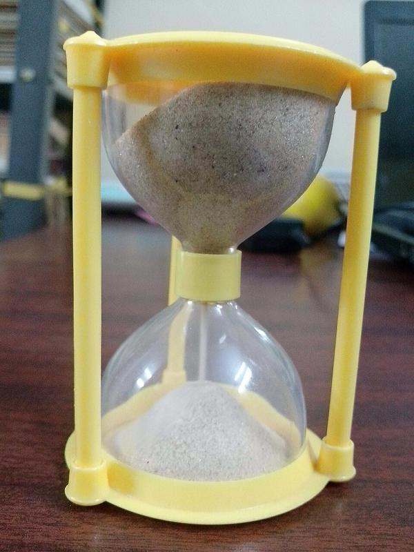
⏳ Đồng hồ cát — cát chảy hết một lượt là hết một khoảng thời gian. Nhớ là: chưa có đồng hồ, người xưa "đếm" thời gian bằng cát! (Tranh minh họa theo phong cách ảnh thật)
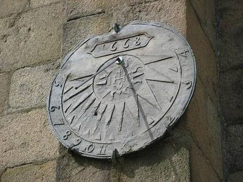
☀️ Đồng hồ mặt trời — bóng của chiếc kim đổ về đâu thì là giờ đó. Nhớ là: cái bóng chính là "kim giờ" của người xưa! (Tranh minh họa theo phong cách ảnh thật)
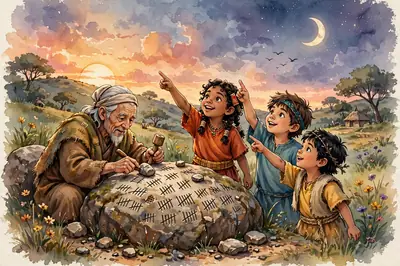
🔭 Người xưa ngắm trời để tính thời gian — theo dấu Mặt Trời mọc lặn, Mặt Trăng tròn khuyết mà khắc vạch đếm ngày. (Tranh minh họa do AI vẽ)
📏 Thanh càng dài, khoảng thời gian càng lớn: 10 → 100 → 1000 năm. Cứ gấp 10 lần là lên một đơn vị mới! (Hình minh họa, độ dài các thanh không theo tỉ lệ thật.)🧭 Trục thời gian: bên trái mốc là TCN — càng xa mốc về trái, năm càng xưa. Bên phải là thời của chúng ta. (Hình minh họa, khoảng cách trên trục không theo tỉ lệ thật.)
⚡ Nhớ nhanh
Người xưa dùng đồng hồ cát để làm gì?
Để ĐO THỜI GIAN — cát chảy hết từ ngăn trên xuống ngăn dưới là hết một khoảng thời gian.
⚡ Nhớ nhanh
Nhìn bóng nắng trên đồng hồ mặt trời, người xưa biết được điều gì?
Biết GIỜ trong ngày — bóng của kim đổ dài, ngắn khác nhau theo vị trí của Mặt Trời.
⭐ Điểm cần nhớ: thế kỉ XXI = các năm 2001 – 2100; thiên niên kỉ III bắt đầu từ năm 2001.
💡 Mẹo nhớ:"Mười – Trăm – Nghìn": thập kỉ mười năm, thế kỉ trăm năm, thiên niên kỉ nghìn năm. Còn số TCN thì ngược đời: số càng to, năm càng xưa!
🔍 Bí mật thú vị: Không hề có "năm 0"! Sau năm 1 TCN là đến ngay năm 1 Công nguyên. Vì thế thế kỉ XXI bắt đầu từ năm 2001 chứ không phải 2000.
🧠 Sơ đồ tư duy
Bài 2: Tính thời gian
Đơn vịTHẬP KỈ = 10 • THẾ KỈ = 100 • THIÊN NIÊN KỈ = 1000 năm
Hai loại lịchÂM lịch theo Mặt Trăng • DƯƠNG lịch theo Mặt Trời
Mốc chianăm 1 CÔNG NGUYÊN • trước đó là TCN — số càng to càng xưa
Tính thế kỉlấy số trăm + 1 (năm 938 → thế kỉ X)
❓ Câu hỏi gợi nhớ
10 năm – 100 năm – 1000 năm. Nhớ câu thần chú "Mười – Trăm – Nghìn" nhé!
Thế kỉ XXI (21) — vì thế kỉ XXI kéo dài từ năm 2001 đến 2100.
Năm 500 TCN xảy ra trước — với năm TCN, số càng lớn thì càng xưa.
Để đo và biết thời gian khi chưa có đồng hồ hiện đại: đồng hồ cát đếm bằng cát chảy, đồng hồ mặt trời đọc theo bóng nắng.
🦴 Cách đây khoảng 4 triệu năm, ở châu Phi, có những sinh vật đầu tiên đứng thẳng dậy và bước đi bằng hai chân… Từ bước chân đầu tiên ấy, cả một hành trình dài đã dẫn đến con người ngày nay — là em đó!
Loài người tiến hóa theo thứ tự: vượn người → người tối cổ → người tinh khôn. Trong đó, người tối cổ gồm hai chặng nổi tiếng: người khéo léo và người đứng thẳng.
Người tối cổ: xuất hiện ở Đông Phi cách đây khoảng 4 triệu năm; đã đi bằng hai chân, biết ghè đẽo đá làm công cụ, về sau biết dùng lửa.
Người tinh khôn: xuất hiện muộn hơn rất lâu; bộ não lớn, cấu tạo cơ thể như người ngày nay; biết làm công cụ bằng đá mài sắc và đẹp hơn, sống lan ra khắp các châu lục.
Ở Việt Nam, các nhà khảo cổ tìm thấy răng người tối cổ trong hang Thẩm Khuyên, Thẩm Hai (Lạng Sơn).
🎞️ Dải tiến hóa — nhìn hình là nhớ ngay 4 chặng đường:
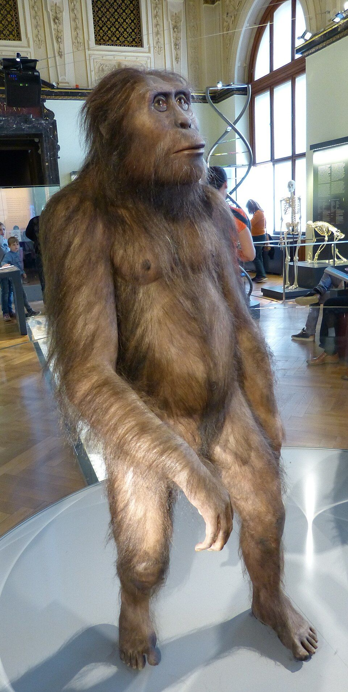
1️⃣ NGƯỜI TỐI CỔ ≈ 4 triệu năm trước 🚶 Đi thẳng bằng 2 chân
➜
2️⃣ NGƯỜI KHÉO LÉO (Homo habilis) ≈ 2,4 triệu năm trước 🪨 Chế tạo công cụ đá đầu tiên
➜
3️⃣ NGƯỜI ĐỨNG THẲNG (Homo erectus) ≈ 1,8 triệu năm trước 🔥 Biết dùng lửa
➜
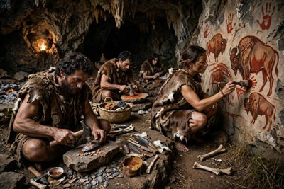
4️⃣ NGƯỜI TINH KHÔN (Homo sapiens) — như người ngày nay 🎨 Biết mài đá, vẽ tranh hang động
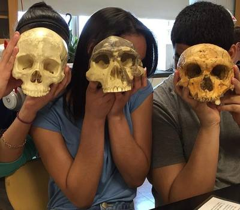
💀 Ba hộp sọ cầm lên so sánh — hộp sọ người tinh khôn và hộp sọ của các loài tổ tiên cầm cạnh nhau: hình dạng, kích thước khác nhau rõ rệt; càng về sau, hộp sọ càng lớn và "trán cao" hơn — vì bộ não ngày càng phát triển. Nhớ là: não to dần theo từng chặng! (Wikimedia Commons, CC BY 4.0)
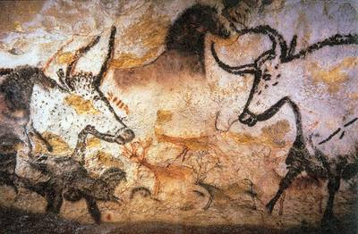
🎨 Tranh vẽ trong hang Lascaux (Pháp) — tác phẩm của người tinh khôn. Nhớ là: biết vẽ tranh = đã có đời sống tinh thần phong phú! (Tranh minh họa theo phong cách ảnh thật)
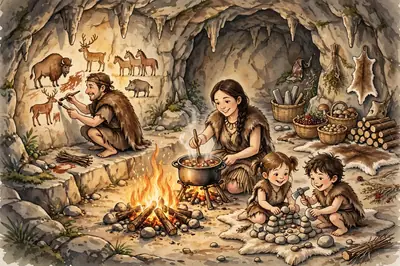
🔥 Gia đình người tinh khôn trong hang — người vẽ tranh lên vách, người nướng thức ăn bên lửa, trẻ con chơi đùa: hang vừa là nhà, vừa là "phòng tranh" đá. (Tranh minh họa do AI vẽ)
⚡ Nhớ nhanh
Người tối cổ xuất hiện ở đâu, khoảng bao lâu trước?
Ở ĐÔNG PHI, khoảng 4 TRIỆU NĂM trước.
⚡ Nhớ nhanh
Người đứng thẳng có bước tiến quan trọng nào?
Biết DÙNG LỬA — để sưởi ấm, nấu chín thức ăn và xua đuổi thú dữ.
⭐ Điểm cần nhớ: người tối cổ ≈ 4 triệu năm trước, ở Đông Phi; công cụ đầu tiên = đá ghè đẽo; người đứng thẳng biết dùng lửa.
💡 Mẹo nhớ (đọc như câu vè): "Tối cổ đi thẳng — Khéo léo làm đá — Đứng thẳng nhóm lửa — Tinh khôn vẽ hang". Bốn chặng, bốn việc, thuộc ngay!
🔍 Bí mật thú vị: Bộ xương người tối cổ nổi tiếng nhất thế giới có tên là "Lucy" — vì khi khai quật được nó, các nhà khoa học đang nghe bài hát "Lucy in the Sky with Diamonds" của ban nhạc The Beatles!
🏕️ Một mình giữa rừng sâu đầy thú dữ thì sống sao nổi? Người xưa đã nghĩ ra cách đầu tiên để tồn tại: sống cùng nhau thành bầy — và từ đó xã hội loài người bắt đầu!
Tổ chức đầu tiên: bầy người nguyên thủy — vài chục người sống chung trong hang động, mái đá gần sông suối; sống bằng săn bắt – hái lượm.
Về sau hình thành công xã thị tộc: gồm những người cùng huyết thống, ở chung, làm chung – hưởng chung.
Xã hội theo chế độ mẫu hệ: phụ nữ giữ vai trò trung tâm vì việc hái lượm mang lại nguồn ăn ổn định hơn săn bắt, và họ là người nuôi dạy trẻ nhỏ.
Bước tiến lớn ở thời đá mới — "cách mạng đá mới": biết mài đá làm công cụ, biết trồng trọt và chăn nuôi, tự làm ra thức ăn.
Đời sống tinh thần: biết vẽ tranh trong hang, có tín ngưỡng, chôn cất người chết kèm đồ vật (đồ tùy táng).
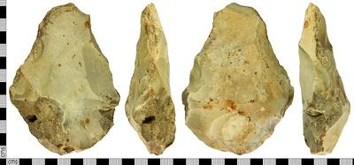
🪓 Rìu đá ghè đẽo nhìn từ nhiều phía — đập, ghè cho đá có cạnh sắc là dùng. Nhớ là: thô, xù xì = đồ đá cũ. (Tranh minh họa theo phong cách ảnh thật)
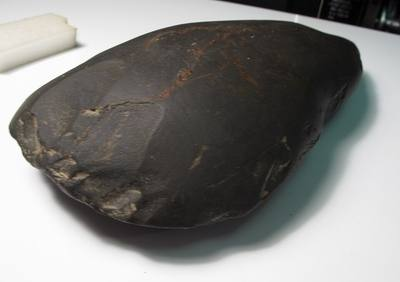
✨ Rìu đá mài nhẵn thời đá mới — mài cho nhẵn bóng, sắc bén. Nhớ là: nhẵn đẹp = đồ đá mới, ra đời sau! (Tranh minh họa theo phong cách ảnh thật)
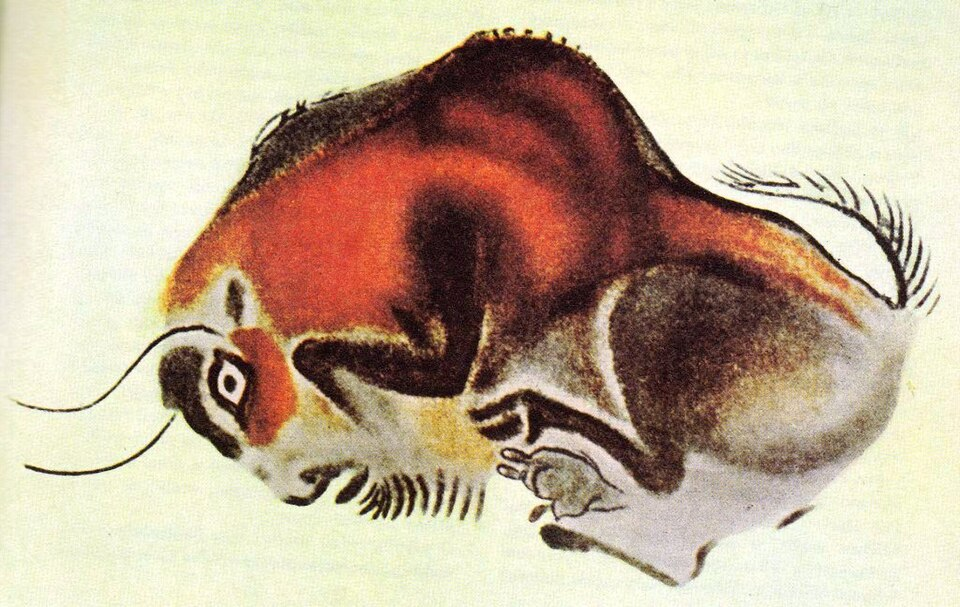
🦬 Tranh bò rừng trong hang Altamira (Tây Ban Nha) — người nguyên thủy vẽ con vật mình săn bắt ngay trên vách hang nơi ở. (Tranh minh họa theo phong cách ảnh thật)
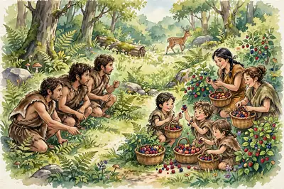
🏹 Bầy người săn bắt – hái lượm — người đuổi theo thú rừng, người hái quả, nhặt hạt: ai cũng có việc, cùng làm cùng hưởng. (Tranh minh họa do AI vẽ)
⚡ Nhớ nhanh
Trước cách mạng đá mới, người nguyên thủy kiếm ăn bằng cách nào?
SĂN BẮT thú rừng và HÁI LƯỢM cây quả — hoàn toàn dựa vào thiên nhiên.
⚡ Nhớ nhanh
Rìu đá được MÀI nhẵn bóng là dấu hiệu của thời kì nào?
Thời ĐÁ MỚI — con người biết mài đá, trồng trọt và chăn nuôi (cách mạng đá mới).
⭐ Điểm cần nhớ: bầy người → thị tộc; phương châm của thị tộc là "làm chung, hưởng chung"; cách mạng đá mới = trồng trọt + chăn nuôi + mài đá.
💡 Mẹo nhớ: Thị tộc chỉ cần nhớ 4 chữ: "Làm chung – Hưởng chung". Còn phân biệt công cụ: "Ghè thì cũ – Mài thì mới"!
🔍 Bí mật thú vị: Người nguyên thủy chôn người chết cùng đồ vật (gọi là đồ tùy táng) — vì họ tin rằng người mất sang "thế giới bên kia" vẫn cần dùng đến những thứ đó.
Bài 5. Sự chuyển biến và phân hóa của xã hội nguyên thủy
⚒️ Một ngày kia, con người tìm ra đồng — thứ kim loại sáng loáng, cứng hơn đá nhiều. Chiếc rìu đồng nhỏ bé đó đã làm thay đổi cả xã hội: lần đầu tiên có người giàu, người nghèo!
Con người biết dùng kim loại (đầu tiên là đồng) làm công cụ → năng suất lao động tăng vọt: khai phá được nhiều đất, làm ra nhiều của cải hơn.
Sản phẩm làm ra bắt đầu dư thừa → xuất hiện của cải riêng (tư hữu) → xã hội phân hóa thành người giàu và người nghèo.
Khi đàn ông giữ vai trò chính trong sản xuất (đúc kim loại, cày bừa, chăn nuôi lớn), chế độ phụ hệ dần thay thế mẫu hệ.
Kết quả: công xã thị tộc tan rã dần, xã hội chuyển sang xã hội có giai cấp — nhà nước chuẩn bị ra đời.
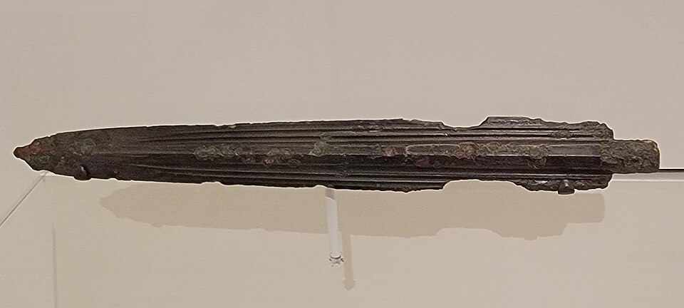
🗡️ Dao găm bằng đồng — kim loại đầu tiên con người chế tạo được. Nhớ là: đồng đến → công cụ bền, sắc → làm ra nhiều của cải hơn! (Tranh minh họa theo phong cách ảnh thật)🌾 Ruộng lúa bậc thang — khi biết trồng trọt giỏi và có công cụ tốt, con người tự làm ra lương thực dồi dào, bắt đầu có của để dành. (Tranh minh họa theo phong cách ảnh thật)
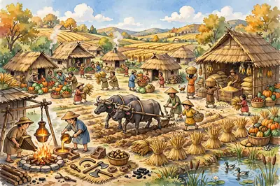
🏘️ Làng bản buổi đầu nông nghiệp — đúc đồng, cày ruộng, trữ lúa... ai làm giỏi, tích lũy giỏi thì dần khấm khá hơn: giàu – nghèo bắt đầu xuất hiện từ đây. (Tranh minh họa do AI vẽ)
⚡ Nhớ nhanh
Kim loại đầu tiên con người biết chế tạo và sử dụng là gì?
ĐỒNG — mở đầu thời đại kim loại, công cụ sắc bén và bền hơn hẳn đồ đá.
⚡ Nhớ nhanh
Vì sao xã hội nguyên thủy bắt đầu chia thành người giàu – người nghèo?
Vì sản xuất tạo ra của DƯ THỪA: có người chiếm được nhiều của cải hơn → xuất hiện giàu – nghèo và giai cấp.
⭐ Điểm cần nhớ: kim loại đầu tiên = đồng; dư thừa → giàu – nghèo; phụ hệ thay mẫu hệ; thị tộc tan rã → xã hội có giai cấp.
💡 Mẹo nhớ — chuỗi 3 mũi tên: Đồng đến → Thừa ra → Giàu nghèo chia đôi. Thuộc chuỗi này là thuộc cả bài!
🔍 Bí mật thú vị: Đồng là kim loại đầu tiên, nhưng đồng khá mềm — về sau con người trộn đồng với thiếc thành đồng thau cứng hơn, rồi mới đến sắt. Ở Việt Nam, văn hóa Đông Sơn với trống đồng là đỉnh cao của nghề đúc đồng thời đó!
🧠 Sơ đồ tư duy
Bài 5: Chuyển biến & phân hóa
Nguyên nhâncông cụ kim loại — đầu tiên là ĐỒNG
Chuỗi thay đổinăng suất tăng → sản phẩm DƯ THỪA → của cải riêng
Xã hộiphân hóa GIÀU – NGHÈO • thị tộc tan rã
Gia đìnhMẪU HỆ → PHỤ HỆ
Kết quảtiến tới xã hội CÓ GIAI CẤP, nhà nước sắp ra đời
❓ Câu hỏi gợi nhớ
Là đồng — công cụ đồng bền và sắc hơn đá, giúp năng suất lao động tăng vọt.
Vì sản phẩm làm ra dư thừa, xuất hiện của cải riêng — ai có nhiều thì giàu, ai ít thì nghèo. Nhớ chuỗi: Đồng đến → Thừa ra → Giàu nghèo chia đôi!
Vì khi có công cụ kim loại, đàn ông giữ vai trò chính trong sản xuất (đúc kim loại, cày bừa, chăn nuôi), nên vị thế trong gia đình và xã hội tăng lên.
Dao găm đồng → con người biết dùng kim loại; ruộng lúa → sản xuất phát triển, làm ra nhiều của cải và bắt đầu dư thừa.
🏜️ Giữa vùng đất khô nóng, hai con sông lớn đã "sinh ra" hai nền văn minh rực rỡ đầu tiên của nhân loại — một bên là những kim tự tháp khổng lồ, một bên là bộ luật khắc đá nổi tiếng. Cùng khám phá nhé!
Ai Cập (Đông Bắc châu Phi): văn minh hình thành bên sông Nin. Hằng năm (khoảng tháng 7–10) nước lũ sông Nin đem theo phù sa màu mỡ — "món quà của sông Nin".
Khoảng năm 3200 TCN, nhà nước Ai Cập ra đời. Đứng đầu là Pharaoh — vị vua nắm mọi quyền hành, được coi như thần thánh.
Thành tựu Ai Cập: chữ tượng hình, giấy làm từ cây papyrus (cói), lịch 365 ngày, kim tự tháp — lăng mộ của Pharaoh (lớn nhất là kim tự tháp Kê-ốp), tượng nhân sư.
Lưỡng Hà nghĩa là "vùng đất giữa hai sông": sông Ti-grơ và sông Ơ-phrát (ngày nay thuộc I-rắc). Người Xu-me lập nên những nhà nước đầu tiên ở đây.
Thành tựu Lưỡng Hà: chữ hình nêm viết trên bảng đất sét; hệ đếm 60 (đến nay ta vẫn chia 1 giờ = 60 phút, vòng tròn = 360 độ); vua Ha-mu-ra-bi ban hành bộ luật thành văn nổi tiếng; vườn treo Ba-bi-lon là một trong 7 kì quan thế giới cổ đại.
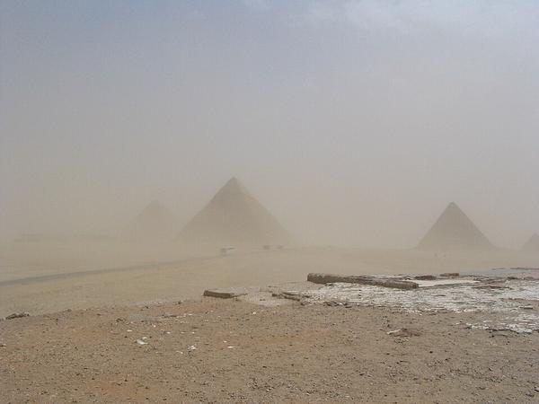
🔺 Kim tự tháp ở Giza — lăng mộ khổng lồ của các Pharaoh. Nhớ là: kim tự tháp = "ngôi nhà vĩnh cửu" cho vua Ai Cập. (Tranh minh họa theo phong cách ảnh thật)
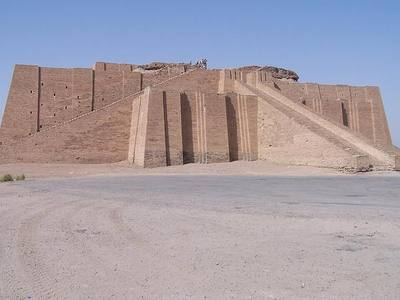
🛕 Đền tháp bậc thang (ziggurat) ở Ur, Lưỡng Hà — nơi thờ thần của người Xu-me, trông như một "cầu thang lên trời". (Tranh minh họa theo phong cách ảnh thật)
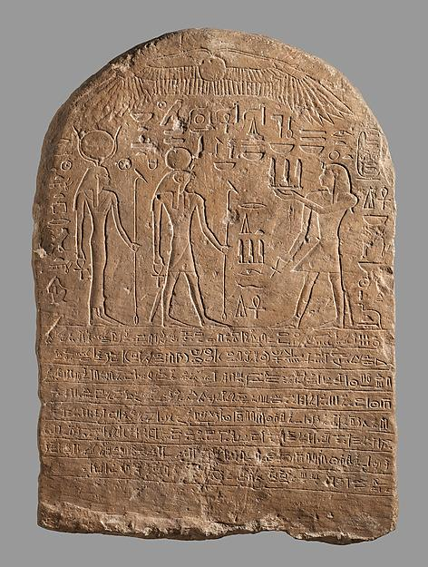
𓂀 Bia đá khắc chữ tượng hình Ai Cập — cả tấm bia phủ kín ký hiệu hình vẽ: chim, rắn, con mắt… Nhớ là: Ai Cập vẽ hình, Lưỡng Hà ấn nêm! (Tranh minh họa theo phong cách ảnh thật)
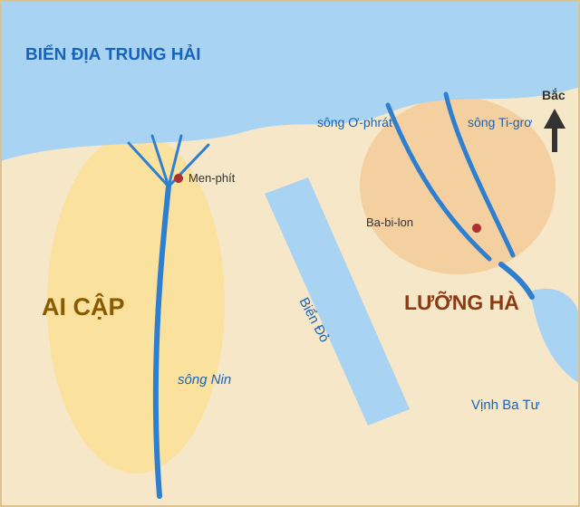
🗺️ Sơ đồ Ai Cập và Lưỡng Hà khoảng năm 1450 TCN — hai cái nôi văn minh nằm cạnh nhau: Ai Cập ôm sông Nin ở phía tây, Lưỡng Hà nằm giữa sông Ti-grơ và sông Ơ-phrát ở phía đông. (Sơ đồ tự vẽ, nhãn tiếng Việt — sơ đồ minh họa đơn giản hoá)
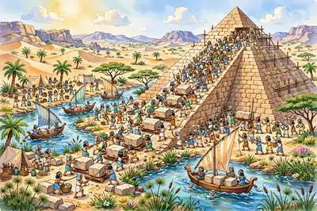
🔺 Xây kim tự tháp — hàng nghìn người kéo những khối đá khổng lồ lên dốc, thuyền chở đá xuôi dòng sông Nin. (Tranh minh họa do AI vẽ)
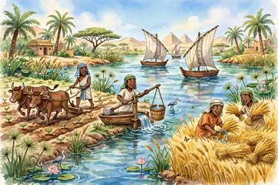
🌾 Nông dân bên sông Nin — cày bừa, kéo nước, gặt lúa vàng: dòng sông hiền hòa nuôi cả nền văn minh Ai Cập. (Tranh minh họa do AI vẽ)
⚡ Nhớ nhanh
Kim tự tháp là công trình của nền văn minh nào, bên bờ sông nào?
AI CẬP cổ đại — bên bờ sông NIN.
⚡ Nhớ nhanh
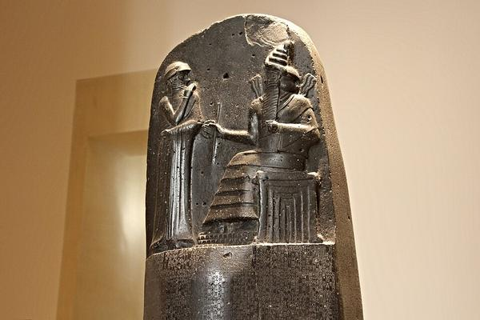
Bộ luật thành văn nổi tiếng của Lưỡng Hà mang tên vị vua nào?
Luật HA-MU-RA-BI (thế kỉ XVIII TCN) — khắc trên bia đá bazan đen.
⭐ Điểm cần nhớ: Ai Cập ≈ 3200 TCN bên sông Nin • Lưỡng Hà = giữa sông Ti-grơ và Ơ-phrát • Luật Ha-mu-ra-bi (thế kỉ XVIII TCN).
💡 Mẹo nhớ:"Ai Cập vẽ hình bên Nin — Lưỡng Hà ấn nêm đếm 60". Và luật thì nhớ tên vua: Ha-mu-ra-bi — đọc vui như "Ha! Muốn ra… luật!"
🔍 Bí mật thú vị: Kim tự tháp Kê-ốp dùng khoảng 2,3 triệu khối đá, có khối nặng bằng cả một con voi — vậy mà người Ai Cập không hề có máy móc hiện đại, và công trình vẫn đứng vững gần 4.500 năm!
🧠 Sơ đồ tư duy
Bài 6: Ai Cập & Lưỡng Hà
Ai Cậpsông NIN • Pharaoh • ≈3200 TCN
Thành tựu Ai Cậpkim tự tháp • chữ TƯỢNG HÌNH • giấy papyrus
Lưỡng Hàgiữa sông TI-GRƠ & Ơ-PHRÁT • nay là I-rắc
Thành tựu Lưỡng Hàchữ HÌNH NÊM • hệ đếm 60 • vườn treo Ba-bi-lon
Bộ luậtvua HA-MU-RA-BI • thế kỉ XVIII TCN
❓ Câu hỏi gợi nhớ
Vì hằng năm nước lũ sông Nin đem theo phù sa màu mỡ và nước tưới, giúp trồng trọt tốt giữa vùng khô hạn.
Ai Cập: chữ tượng hình (vẽ hình). Lưỡng Hà: chữ hình nêm (ấn dấu hình nêm lên bảng đất sét).
Sông Ti-grơ và sông Ơ-phrát — "lưỡng" nghĩa là hai, "hà" nghĩa là sông!
Vì đã ban hành bộ luật thành văn nổi tiếng của Lưỡng Hà cổ đại, vào thế kỉ XVIII TCN.
🛕 Bên hai con sông lớn của Ấn Độ, một nền văn minh rực rỡ đã ra đời — nơi sinh ra cả Phật giáo lẫn những con số 0, 1, 2, 3… mà hôm nay em dùng trong giờ Toán!
Văn minh Ấn Độ cổ đại hình thành ở lưu vực sông Ấn và sông Hằng (phía bắc Ấn Độ ngày nay), khoảng 2500 TCN đã có những thành phố lớn như Mô-hen-giô Đa-rô và Ha-ráp-pa.
Xã hội phân chia thành 4 đẳng cấp (chế độ Vác-na), từ cao xuống thấp: Bà La Môn (tu sĩ) → Sát-đế-lị (vua chúa, chiến binh) → Vai-sơ (nông dân, thợ, thương nhân) → Su-đra (người phục dịch, thấp nhất).
Tôn giáo lớn: Hin-đu giáo và Phật giáo — do Thích Ca Mâu Ni sáng lập vào thế kỉ VI TCN.
Thành tựu nổi tiếng: phát minh chữ số và số 0 cùng hệ đếm thập phân (về sau cả thế giới dùng); hai bộ sử thi đồ sộ Ma-ha-bha-ra-ta và Ra-ma-ya-na; chữ Phạn (Sanskrit).
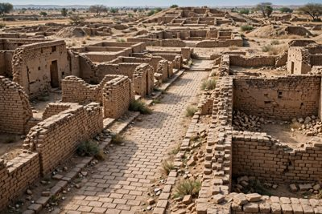
🏙️ Di tích Mô-hen-giô Đa-rô — thành phố cổ xây bằng gạch nung, có đường phố và cống thoát nước từ khoảng 4.500 năm trước! (Tranh minh họa theo phong cách ảnh thật)🌊 Sông Hằng ở Va-ra-na-si — con sông thiêng của người Ấn Độ, nơi văn minh phát triển phồn thịnh. Nhớ là: Ấn và Hằng — hai sông nuôi một nền văn minh. (Tranh minh họa theo phong cách ảnh thật)
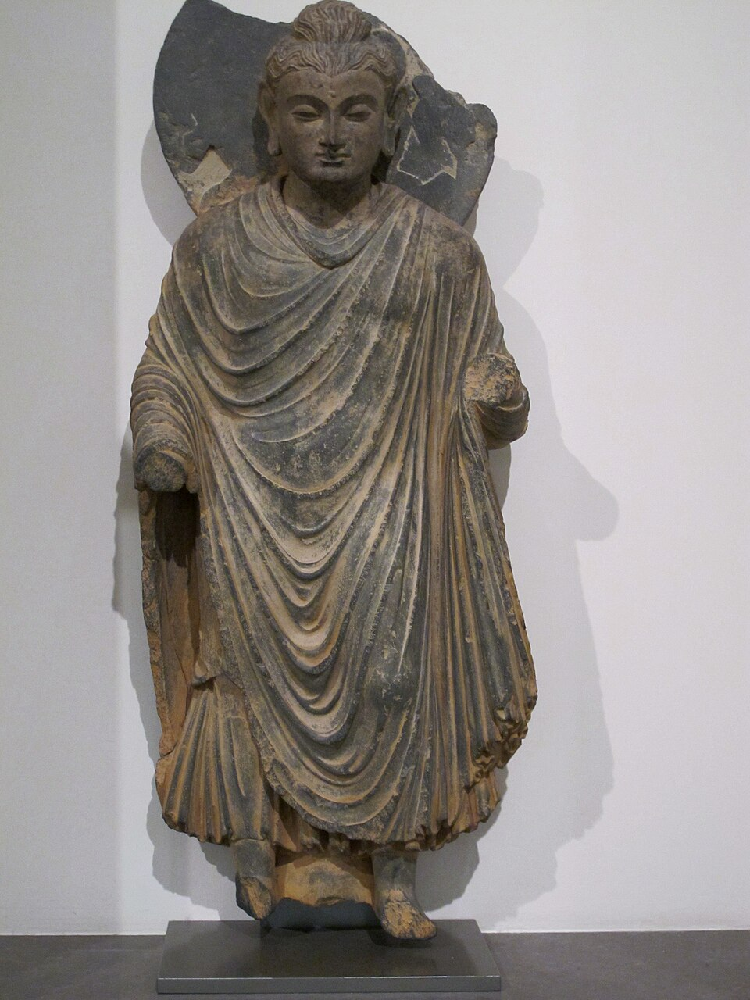
🙏 Tượng Phật cổ từ vùng Gan-đa-ra — Phật giáo ra đời ở Ấn Độ vào thế kỉ VI TCN rồi lan ra khắp châu Á, trong đó có Việt Nam. (Tranh minh họa theo phong cách ảnh thật)
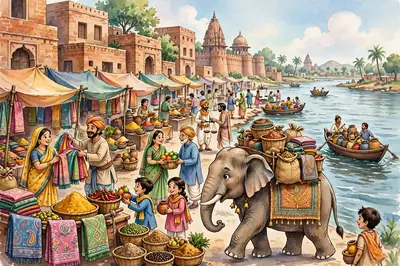
🐘 Chợ búa Ấn Độ cổ — thương nhân buôn vải vóc, gia vị rực rỡ bên sông Ấn; voi thồ hàng đi qua phố gạch nung. (Tranh minh họa do AI vẽ)
⚡ Nhớ nhanh
Di tích Mô-hen-giô Đa-rô thuộc nền văn minh sông nào?
Văn minh sông ẤN — Ấn Độ cổ đại, hình thành khoảng 2500 TCN.
⚡ Nhớ nhanh
Phật giáo ra đời ở đâu, vào khoảng thế kỉ nào?
Ở ẤN ĐỘ, vào thế kỉ VI TCN.
⭐ Điểm cần nhớ: văn minh sông Ấn ≈ 2500 TCN • Phật giáo ra đời thế kỉ VI TCN • 4 đẳng cấp: Bà La Môn – Sát-đế-lị – Vai-sơ – Su-đra.
💡 Mẹo nhớ 4 đẳng cấp, đọc từ cao xuống thấp: "Môn ngồi cao — Vương cầm kiếm — Dân làm lụng — Nô phục dịch" (Bà La Môn, Sát-đế-lị, Vai-sơ, Su-đra).
🔍 Bí mật thú vị: Con số 0 nhỏ xíu mà thay đổi cả thế giới! Nhờ người Ấn Độ nghĩ ra số 0 và cách viết số theo hàng (đơn vị, chục, trăm…), ngày nay em mới cộng trừ dễ dàng như vậy đó.
🧠 Sơ đồ tư duy
Bài 7: Ấn Độ cổ đại
Hai con sôngsông ẤN • sông HẰNG
Thành phố cổMô-hen-giô Đa-rô • Ha-ráp-pa (≈2500 TCN)
4 đẳng cấpBà La Môn → Sát-đế-lị → Vai-sơ → Su-đra
Tôn giáoHin-đu giáo • PHẬT GIÁO (tk VI TCN)
Thành tựuchữ số & SỐ 0 • sử thi Ma-ha-bha-ra-ta, Ra-ma-ya-na
❓ Câu hỏi gợi nhớ
Bên sông Ấn và sông Hằng ở phía bắc Ấn Độ ngày nay.
Bà La Môn → Sát-đế-lị → Vai-sơ → Su-đra. Nhớ câu: "Môn ngồi cao — Vương cầm kiếm — Dân làm lụng — Nô phục dịch".
Do Thích Ca Mâu Ni sáng lập, vào thế kỉ VI TCN, tại Ấn Độ.
Phát minh chữ số và số 0 cùng cách đếm thập phân — nền tảng của toán học ngày nay.
🐉 Một bức tường dài đến mức nhìn thấy từ… sách địa lí nào cũng nhắc, một đội quân bằng đất nung hàng nghìn người, và một vị vua thống nhất cả thiên hạ khi mới ngoài 30 tuổi — đó là Trung Quốc cổ đại!
Văn minh Trung Quốc hình thành ở lưu vực sông Hoàng Hà (và Trường Giang), trải qua các triều đại Hạ, Thương, Chu; thời Xuân Thu – Chiến Quốc, nhiều nước nhỏ đánh lẫn nhau.
Năm 221 TCN, Tần Thủy Hoàng thống nhất Trung Quốc, lập nên nhà Tần và trở thành hoàng đế đầu tiên; ông nối và xây Vạn Lí Trường Thành để phòng thủ phía Bắc, và cho làm lăng mộ với đội quân đất nung khổng lồ.
Nhà Hán (sau nhà Tần) mở Con đường tơ lụa nối Trung Quốc với Trung Á và phương Tây để buôn bán.
Đến năm 618, nhà Đường thành lập — Trung Quốc bước vào thời cực thịnh (đến thế kỉ VII).
Thành tựu: chữ viết từ giáp cốt (khắc trên xương, mai rùa) phát triển thành chữ Hán; tư tưởng Nho giáo của Khổng Tử; lịch pháp, thiên văn, y học phát triển sớm.
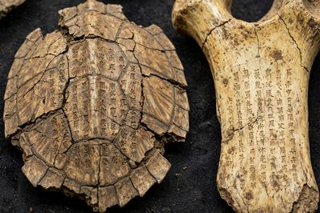
🦴 Giáp cốt — chữ cổ khắc trên xương và mai rùa để… bói toán! Nhớ là: chữ Hán bắt đầu từ những nét khắc này. (Tranh minh họa theo phong cách ảnh thật)🧱 Vạn Lí Trường Thành — bức tường thành dài hàng nghìn km chạy qua núi non, xây để chống các bộ tộc phía Bắc. (Tranh minh họa theo phong cách ảnh thật)
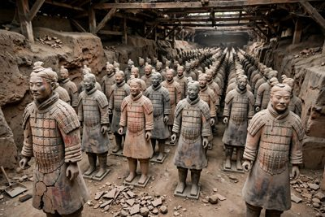
🗿 Đội quân đất nung trong lăng Tần Thủy Hoàng — hàng nghìn tượng lính bằng đất nung, mỗi tượng một khuôn mặt khác nhau! (Tranh minh họa theo phong cách ảnh thật)
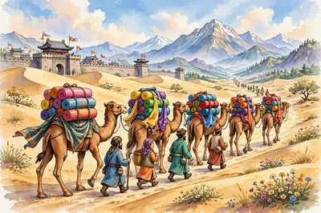
🐫 Con đường tơ lụa — đoàn lạc đà chở những cuộn lụa óng ánh vượt sa mạc, nối Trung Quốc với phương Tây xa xôi. (Tranh minh họa do AI vẽ)
⚡ Nhớ nhanh
Chữ viết của Trung Quốc bắt đầu từ dạng chữ nào?
Chữ GIÁP CỐT — khắc trên mai rùa và xương thú để bói toán.
⚡ Nhớ nhanh
Đội quân đất nung thuộc lăng mộ của vị vua nào?
TẦN THỦY HOÀNG — người thống nhất Trung Quốc năm 221 TCN.
⭐ Điểm cần nhớ:221 TCN Tần Thủy Hoàng thống nhất • 618 nhà Đường thành lập • chữ viết bắt đầu từ giáp cốt.
💡 Mẹo nhớ hai mốc vàng: "221 — Tần gom thiên hạ; 618 — Đường lên rực rỡ". (221 TCN Tần Thủy Hoàng thống nhất; 618 nhà Đường thành lập.)
🔍 Bí mật thú vị: Đội quân đất nung bị chôn dưới đất hơn 2.000 năm và chỉ được phát hiện tình cờ năm 1974, khi mấy bác nông dân đào giếng đụng phải một cái đầu tượng!
🧠 Sơ đồ tư duy
Bài 8: Trung Quốc cổ đại
Cái nôilưu vực sông HOÀNG HÀ
Thống nhất221 TCN • TẦN THỦY HOÀNG • hoàng đế đầu tiên
🏛️ Nơi sinh ra Thế vận hội Olympic, những câu chuyện thần thoại li kì về thần Dớt (Zeus), và một đế quốc xây đường, xây luật giỏi đến mức châu Âu dùng theo hàng nghìn năm sau!
Hy Lạp cổ đại gồm nhiều thành bang (như A-ten, Xpác-ta) nằm ven biển Địa Trung Hải. A-ten nổi tiếng với nền dân chủ cổ đại và văn hóa rực rỡ — tiêu biểu là đền Pa-tê-nông.
Văn hóa Hy Lạp: thần thoại Hy Lạp với các vị thần sống trên đỉnh Ô-lim-pơ (đứng đầu là thần Dớt); hai bộ sử thi I-li-át và Ô-đi-xê của Hô-me-rơ; Thế vận hội Ô-lim-píc bắt đầu từ năm 776 TCN.
La Mã: từ một thành quốc nhỏ (thành lập năm 753 TCN theo truyền thuyết), lớn mạnh thành đế quốc rộng lớn quanh Địa Trung Hải.
Thành tựu La Mã: hệ thống luật pháp đặt nền móng cho luật nhiều nước ngày nay; kiến trúc vòm cuốn đồ sộ — tiêu biểu là đấu trường Cô-li-dê ở Rô-ma; đường sá, cầu máng dẫn nước; lịch Giu-li-út gần giống dương lịch ngày nay.
➕ Kiến thức bổ sung — biết thêm để làm được bài tập: Người La Mã còn để lại bảng chữ cái Latinh (a, b, c…) mà rất nhiều nước vẫn dùng đến ngày nay — chữ Quốc ngữ của Việt Nam cũng được xây dựng dựa trên chữ Latinh đó!
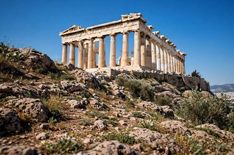
🏛️ Đền Pa-tê-nông trên đồi A-crô-pô-lít ở A-ten — ngôi đền đá trắng thờ nữ thần A-tê-na, biểu tượng của Hy Lạp cổ đại. (Tranh minh họa theo phong cách ảnh thật)
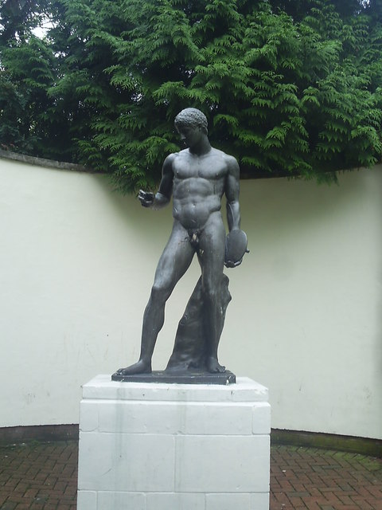
🥏 Tượng Người ném đĩa — người Hy Lạp mê thể thao đến mức sáng tạo ra Thế vận hội Olympic từ năm 776 TCN! (Tranh minh họa theo phong cách ảnh thật)🏟️ Đấu trường Cô-li-dê ở Rô-ma — sân vận động khổng lồ của La Mã cổ đại, chứa được hàng chục nghìn khán giả xem giác đấu. (Tranh minh họa theo phong cách ảnh thật)
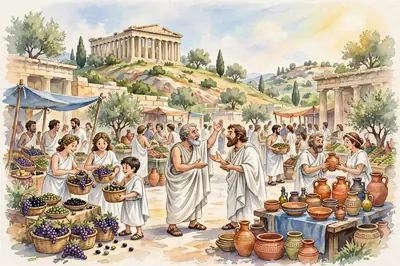
🏺 Chợ a-go-ra ở A-ten — người mua ô liu, nho, đồ gốm; góc kia hai triết gia đang tranh luận sôi nổi, trên đồi là đền Pác-tê-nông. (Tranh minh họa do AI vẽ)
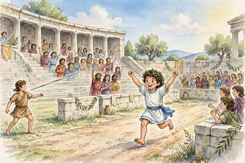
🏃 Thế vận hội Ô-lim-pích — vận động viên chạy đua trên sân đất, người thắng được đội vòng lá ô liu. (Tranh minh họa do AI vẽ)
⚡ Nhớ nhanh
Thế vận hội Olympic bắt đầu từ năm nào, ở đâu?
Năm 776 TCN, ở HY LẠP cổ đại.
⚡ Nhớ nhanh
Đấu trường Cô-lô-dê là công trình của nền văn minh nào?
LA MÃ cổ đại — đấu trường lớn nổi tiếng của đế chế La Mã.
⭐ Điểm cần nhớ: Olympic bắt đầu 776 TCN • A-ten = dân chủ cổ đại • La Mã thành lập 753 TCN (theo truyền thuyết).
💡 Mẹo nhớ:"Hy Lạp NGHĨ và CHƠI (dân chủ, thần thoại, Olympic) — La Mã XÂY và TRỊ (đường, luật, đấu trường)".
🔍 Bí mật thú vị: Thời Olympic cổ đại, các thành bang Hy Lạp đang đánh nhau cũng phải ngừng chiến tranh để thi đấu — và vận động viên thi đấu… không mặc gì cả, bôi dầu ô-liu khắp người!
🧠 Sơ đồ tư duy
Bài 9: Hy Lạp & La Mã
Hy Lạpnhiều THÀNH BANG ven Địa Trung Hải
A-tenDÂN CHỦ cổ đại • đền PA-TÊ-NÔNG
Văn hóa Hy Lạpthần thoại (đỉnh Ô-lim-pơ) • sử thi I-li-át, Ô-đi-xê • OLYMPIC 776 TCN
La Mã753 TCN → ĐẾ QUỐC quanh Địa Trung Hải
Thành tựu La MãLUẬT PHÁP • đấu trường CÔ-LI-DÊ • đường sá, cầu máng
❓ Câu hỏi gợi nhớ
Từ Hy Lạp cổ đại, bắt đầu năm 776 TCN — thi đấu để tôn vinh thần Dớt.
Vì có nền dân chủ cổ đại và nền văn hóa rực rỡ, tiêu biểu là đền Pa-tê-nông.
Của La Mã cổ đại — là nơi tổ chức các cuộc thi đấu (giác đấu) và trình diễn cho hàng chục nghìn khán giả.
I-li-át và Ô-đi-xê — tương truyền do Hô-me-rơ sáng tác.
Bài 10. Đông Nam Á từ đầu Công nguyên đến thế kỉ X
🌴 Ngay ở khu vực quê hương mình — Đông Nam Á — từ gần 2.000 năm trước đã có những vương quốc buôn bán sầm uất, tàu buôn từ tận La Mã và Ấn Độ tìm đến. Em có biết vương quốc nào nằm ngay trên đất Việt Nam ngày nay không?
Từ đầu Công nguyên, ở Đông Nam Á xuất hiện các quốc gia sơ kì: Phù Nam (hạ lưu sông Mê Công), Chăm-pa (miền Trung Việt Nam ngày nay), cùng nhiều vương quốc trên các đảo và bán đảo.
Phù Nam có thương cảng Óc Eo sầm uất — nơi tàu buôn từ Ấn Độ, Trung Quốc, thậm chí La Mã tìm đến trao đổi hàng hóa.
Từ thế kỉ VII đến thế kỉ X, các vương quốc phong kiến ở Đông Nam Á hình thành và bước đầu phát triển mạnh (như Chân Lạp với kinh đô Ăng-co về sau rất nổi tiếng).
Đời sống chung của cư dân Đông Nam Á: trồng lúa nước nhờ khí hậu gió mùa mưa nhiều, ở nhà sàn — tạo nên "văn minh lúa nước" đặc trưng.
Giao lưu văn hóa: Đông Nam Á tiếp nhận ảnh hưởng từ Ấn Độ (Phật giáo, Hin-đu giáo, chữ viết) và Trung Quốc, nhưng các dân tộc vẫn giữ bản sắc riêng (tín ngưỡng bản địa, phong tục, nhà sàn, trồng lúa).
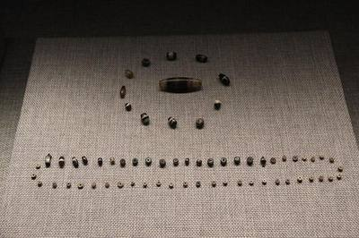
📿 Chuỗi hạt của văn hóa Óc Eo — đồ trang sức tìm thấy ở cảng thị Óc Eo, chứng tỏ nghề thủ công và buôn bán ở Phù Nam rất phát triển. (Tranh minh họa theo phong cách ảnh thật)
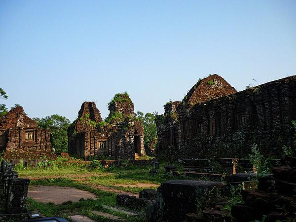
🛕 Tháp Chăm ở Mỹ Sơn (Quảng Nam) — di tích của vương quốc Chăm-pa trên đất miền Trung Việt Nam ngày nay. (Tranh minh họa theo phong cách ảnh thật)🏯 Ăng-co Vát (Campuchia) — ngôi đền đá khổng lồ nổi tiếng thế giới, di sản của vương quốc Ăng-co ở Đông Nam Á. (Tranh minh họa theo phong cách ảnh thật)
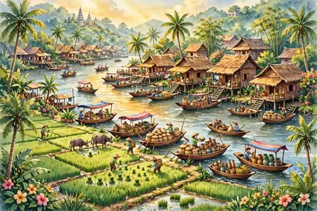
🛶 Làng quê Đông Nam Á cổ — nhà sàn ven sông, thuyền buôn lúa gạo và đồ gốm, ruộng lúa xanh rờn: bức tranh văn minh lúa nước từ buổi đầu. (Tranh minh họa do AI vẽ)
⚡ Nhớ nhanh
Hạt chuỗi trong hình gắn với cảng thị nổi tiếng nào của vương quốc Phù Nam?
Cảng ÓC EO — cảng thị giao thương sầm uất ở hạ lưu sông Mê Công.
⚡ Nhớ nhanh
Đặc trưng lớn nhất của văn minh Đông Nam Á là gì?
VĂN MINH LÚA NƯỚC — trồng lúa nước là nghề chính, làng xóm mọc lên ven sông.
⭐ Điểm cần nhớ:thế kỉ I–II: Phù Nam hình thành ở hạ lưu Mê Công • cảng Óc Eo • đặc trưng Đông Nam Á = văn minh lúa nước.
💡 Mẹo nhớ — ba chìa khóa của Đông Nam Á cổ: "Gió mùa – Lúa nước – Nhà sàn". Thêm một cảng: "Óc Eo bán buôn, tàu xa cũng đến"!
🔍 Bí mật thú vị: Ở Óc Eo, các nhà khảo cổ tìm thấy cả tiền xu La Mã và con dấu, đồ trang sức từ Ấn Độ — nghĩa là gần 2.000 năm trước, thương nhân từ rất xa xôi đã lênh đênh đến tận miền Tây Nam Bộ ngày nay để buôn bán!
🧠 Sơ đồ tư duy
Bài 10: Đông Nam Á sơ kì
Quốc gia sơ kìPHÙ NAM (hạ lưu Mê Công) • CHĂM-PA (miền Trung VN)
Thương cảngÓC EO — tàu buôn Ấn Độ, Trung Quốc, La Mã
Đời sốngtrồng LÚA NƯỚC • ở NHÀ SÀN • khí hậu GIÓ MÙA
Thế kỉ VII–Xcác vương quốc phong kiến hình thành & phát triển
Giao lưu văn hóatiếp nhận ẤN ĐỘ + TRUNG QUỐC nhưng GIỮ BẢN SẮC riêng
❓ Câu hỏi gợi nhớ
Ở hạ lưu sông Mê Công — vùng đất phía nam Việt Nam và Campuchia ngày nay.
Vương quốc Chăm-pa — quốc gia sơ kì ở miền Trung Việt Nam ngày nay.
Trồng lúa nước, nhờ khí hậu gió mùa nóng ẩm, mưa nhiều và nhiều sông ngòi.
Tiếp nhận từ Ấn Độ và Trung Quốc (tôn giáo, chữ viết…) nhưng vẫn giữ được bản sắc văn hóa riêng của mình.
🌏 Từ thế kỉ VII, ở Đông Nam Á bỗng mọc lên những vương quốc có vua, có quan, có kinh đô lộng lẫy. Vì sao người ta lập được vương quốc? Câu trả lời bắt đầu từ hạt lúa và con thuyền buôn!
Vương quốc phong kiến là nhà nước do vua đứng đầu, quan lại giúp vua cai trị. Nông dân nộp thuế và đi lao dịch, tức làm việc không công cho nhà nước.
Từ thế kỉ VII, Đông Nam Á lập được vương quốc vì lúa nước cho của dư nuôi quan quân, buôn bán đường biển phát triển nên cần nhà nước quản lí và bảo vệ.
Ví dụ: Sri-vi-giay-a ở đảo Xu-ma-tra, giàu nhờ làm chủ eo biển Ma-lắc-ca, thu thuế tàu buôn qua lại giữa Ấn Độ và Trung Quốc.
Văn hóa Ấn Độ truyền vào: đạo Hin-đu, đạo Phật, chữ Phạn và nghệ thuật xây đền tháp.
Nhưng người Đông Nam Á vẫn giữ của mình: tiếng nói, phong tục và cách trồng lúa nước riêng.
⚡ Nhớ nhanh
Ai đứng đầu vương quốc phong kiến?
Vua đứng đầu, quan lại giúp vua cai trị.
⚡ Nhớ nhanh
Sri-vi-giay-a giàu nhờ gì?
Buôn bán qua eo biển Ma-lắc-ca.
⭐ Điểm cần nhớ: vua đứng đầu, quan giúp việc, dân nộp thuế + lao dịch • thế kỉ VII lập vương quốc nhờ lúa dư + buôn biển • Sri-vi-giay-a giàu nhờ eo Ma-lắc-ca • học Ấn Độ nhưng giữ tiếng nói, phong tục, lúa nước riêng.
❓ Câu hỏi gợi nhớ
Là nhà nước do vua đứng đầu, quan lại giúp vua cai trị; nông dân nộp thuế và đi lao dịch.
Vì lúa nước cho của dư nuôi quan quân, buôn bán đường biển phát triển nên cần nhà nước quản lí và bảo vệ.
Giữ tiếng nói, phong tục và cách trồng lúa nước của riêng mình.
🃏 Flashcard của bài
Hình minh họa: Vương quốc phong kiến Đông Nam Á (VII–X).
⛵ Tàu buôn Ấn Độ cập bến, mang theo đạo Phật, chữ viết và chuyện kể Ra-ma-ya-na. Người Đông Nam Á đón nhận — nhưng không chép y nguyên, họ biến thành của riêng mình!
Giao lưu văn hóa là các dân tộc gặp gỡ, trao đổi và học hỏi lẫn nhau về tôn giáo, chữ viết, nghệ thuật.
Ấn Độ truyền sang Đông Nam Á: đạo Hin-đu, đạo Phật, chữ Phạn, nghệ thuật đền tháp và truyện Ra-ma-ya-na.
Người Đông Nam Á học chữ Phạn rồi biến đổi cho hợp tiếng nói của mình, ví dụ chữ Khmer, chữ Chăm.
Ví dụ: Bô-rô-bu-đua — ngôi đền Phật giáo lớn ở đảo Java (In-đô-nê-xi-a), xây theo kiểu tháp nhiều tầng.
Vì sao văn hóa Đông Nam Á vừa giống Ấn Độ vừa khác? Vì học văn hóa Ấn Độ nhưng vẫn giữ tiếng nói, phong tục và cách sống của mình.
⚡ Nhớ nhanh
Ấn Độ truyền vào Đông Nam Á những gì?
Đạo Hin-đu, đạo Phật, chữ Phạn.
⚡ Nhớ nhanh
Học mà vẫn giữ bản sắc nghĩa là gì?
Tiếp thu có chọn lọc, giữ tiếng nói và phong tục riêng.
⭐ Điểm cần nhớ: giao lưu = gặp gỡ, trao đổi, học hỏi lẫn nhau • Ấn Độ truyền Hin-đu, Phật, chữ Phạn, đền tháp, Ra-ma-ya-na • biến chữ Phạn thành chữ Khmer, chữ Chăm • Bô-rô-bu-đua ở Java, tháp nhiều tầng.
❓ Câu hỏi gợi nhớ
Là các dân tộc gặp gỡ, trao đổi và học hỏi lẫn nhau về tôn giáo, chữ viết, nghệ thuật.
Học chữ Phạn rồi biến đổi cho hợp tiếng nói của mình, ví dụ chữ Khmer, chữ Chăm.
Là ngôi đền Phật giáo lớn ở đảo Java (In-đô-nê-xi-a), xây theo kiểu tháp nhiều tầng.
🥁 Cách đây hơn 2.000 năm, trên đất Việt Nam đã có một nhà nước của riêng người Việt — với trống đồng vang lừng và thành ốc xoáy độc nhất vô nhị!
Nhà nước Văn Lang ra đời khoảng thế kỉ VII TCN, Hùng Vương đứng đầu, kinh đô ở Phong Châu.
Văn Lang chia thành 15 bộ: Lạc hầu, Lạc tướng giúp vua, Bồ chính cai quản từng bộ.
Người Văn Lang sống bằng nghề trồng lúa nước và đúc đồng, nổi tiếng nhất là trống đồng Đông Sơn.
Cuối thế kỉ III TCN, An Dương Vương hợp nhất Văn Lang với lãnh thổ của mình, lập nước Âu Lạc, đóng đô ở Cổ Loa.
Thành Cổ Loa xây hình xoáy ốc nhiều vòng, vừa là kinh đô vừa là căn cứ phòng thủ.
⚡ Nhớ nhanh
Văn Lang: ai đứng đầu, kinh đô ở đâu, mấy bộ?
Hùng Vương, kinh đô Phong Châu, 15 bộ.
⚡ Nhớ nhanh
Âu Lạc: ai lập ra, kinh đô ở đâu?
An Dương Vương, kinh đô Cổ Loa, thành xoáy ốc.
⭐ Điểm cần nhớ: Văn Lang thế kỉ VII TCN, Hùng Vương, Phong Châu • 15 bộ, Lạc hầu, Lạc tướng, Bồ chính • lúa nước + đúc đồng, trống Đông Sơn • Âu Lạc cuối thế kỉ III TCN, An Dương Vương, Cổ Loa xoáy ốc.
❓ Câu hỏi gợi nhớ
Khoảng thế kỉ VII TCN, Hùng Vương đứng đầu, kinh đô ở Phong Châu.
Trồng lúa nước và đúc đồng, nổi tiếng nhất là trống đồng Đông Sơn.
Thành xây hình xoáy ốc nhiều vòng, vừa là kinh đô vừa là căn cứ phòng thủ.
Bài 14. Chính sách cai trị phương Bắc và chuyển biến xã hội Âu Lạc
🏯 Bị đô hộ hàng nghìn năm mà vẫn không mất tiếng nói, không mất phong tục — người Việt đã làm điều đó bằng cách nào?
Chính quyền đô hộ chia nước ta thành các quận, huyện, đặt quan người Hán sang cai trị.
Đồng hóa là bắt người Việt theo tiếng nói, chữ viết, phong tục Hán để biến Âu Lạc thành một phần của Trung Quốc.
Thuế nặng bắt nộp tiền và sản vật quý. Lao dịch là làm việc không công như đắp thành, đào kênh.
Công cụ sắt làm thay đổi sản xuất: cày sâu hơn, ruộng mở rộng, lúa làm ra nhiều hơn trước.
Người Việt giữ được tiếng nói, phong tục, thờ cúng tổ tiên. Nhờ vậy không bị hòa tan.
⚡ Nhớ nhanh
Đồng hóa là gì?
Bắt theo tiếng Hán, phong tục Hán để xóa dân tộc Việt.
⚡ Nhớ nhanh
Người Việt vẫn giữ gì?
Tiếng nói và phong tục riêng.
⭐ Điểm cần nhớ: chia quận, huyện, quan Hán cai trị • đồng hóa = bắt theo tiếng, chữ, phong tục Hán • thuế nặng + lao dịch không công, công cụ sắt đổi mới sản xuất • giữ tiếng nói, phong tục, thờ cúng tổ tiên nên không bị hòa tan.
❓ Câu hỏi gợi nhớ
Là bắt người Việt theo tiếng nói, chữ viết, phong tục Hán để biến Âu Lạc thành một phần của Trung Quốc.
Thuế nặng bắt nộp tiền và sản vật quý. Lao dịch là làm việc không công như đắp thành, đào kênh.
Cày sâu hơn, ruộng mở rộng, lúa làm ra nhiều hơn trước.
🃏 Flashcard của bài
Hình minh họa: Chính sách cai trị phương Bắc và chuyển biến xã hội Âu Lạc.
Bài 15. Các cuộc khởi nghĩa giành độc lập trước thế kỉ X
⚔️ Hơn 1.000 năm Bắc thuộc, hết lớp người này đến lớp người khác đứng lên. Em có nhớ được 5 cái tên và 5 mốc năm không?
Hai Bà Trưng khởi nghĩa năm 40 ở Hát Môn. Trưng Trắc lên làm vua.
Bà Triệu — nữ anh hùng ở Phú Điền (Thanh Hóa), khởi nghĩa năm 248, muốn "cưỡi gió mạnh, đạp sóng dữ".
Lý Bí: năm 542 thắng lợi, lập nước Vạn Xuân, xưng Lý Nam Đế.
Mai Thúc Loan (713, Mai Hắc Đế) và Phùng Hưng (cuối thế kỉ VIII, Bố Cái Đại Vương).
Khúc Thừa Dụ năm 905 giành được quyền tự chủ: người Việt tự cai quản đất nước mình.
⚡ Nhớ nhanh
Nhớ nhanh: Hai Bà Trưng – Bà Triệu – Lý Bí
Năm 40 – năm 248 – năm 542 (Vạn Xuân).
⚡ Nhớ nhanh
Khúc Thừa Dụ năm 905 giành được gì?
Quyền tự chủ.
⭐ Điểm cần nhớ: 40 – Hai Bà Trưng (Hát Môn) • 248 – Bà Triệu (Phú Điền) • 542 – Lý Bí lập Vạn Xuân • 713 Mai Thúc Loan, cuối VIII Phùng Hưng, 905 Khúc Thừa Dụ giành quyền tự chủ.
❓ Câu hỏi gợi nhớ
Năm 40 ở Hát Môn. Trưng Trắc lên làm vua.
Năm 542 thắng lợi, lập nước Vạn Xuân, xưng Lý Nam Đế.
Quyền tự chủ: người Việt tự cai quản đất nước mình.
🃏 Flashcard của bài
Hình minh họa: Các cuộc khởi nghĩa giành độc lập trước thế kỉ X.
🗣️ Kẻ đô hộ bắt nói tiếng Hán, theo phong tục Hán. Nhưng trong mỗi ngôi làng Việt, tiếng Việt vẫn vang lên mỗi ngày — đó chính là cuộc đấu tranh thầm lặng mà bền bỉ nhất.
Bảo tồn văn hóa là giữ gìn tiếng nói, phong tục tốt đẹp của dân tộc mình.
Người Việt giữ tiếng nói bằng cách: học chữ Hán nhưng ở nhà, trong làng vẫn nói tiếng Việt.
Phong tục Việt giữ được gồm: ăn trầu, nhuộm răng, thờ cúng tổ tiên.
Chữ Nôm là chữ người Việt sáng tạo từ chữ Hán để ghi âm tiếng Việt.
Vì sao đồng hóa nguy hiểm? Vì mất tiếng nói, phong tục thì dân tộc dễ bị hòa tan, không còn ý thức độc lập.
⚡ Nhớ nhanh
Giữ tiếng nói bằng cách nào?
Học chữ Hán nhưng vẫn nói tiếng Việt ở nhà, trong làng.
⚡ Nhớ nhanh
Chữ Nôm là gì?
Ghi tiếng Việt bằng chữ sáng tạo từ chữ Hán.
⭐ Điểm cần nhớ: bảo tồn = giữ tiếng nói, phong tục • nói tiếng Việt ở nhà, trong làng dù học chữ Hán • ăn trầu, nhuộm răng, thờ cúng tổ tiên • chữ Nôm ghi tiếng Việt từ chữ Hán.
❓ Câu hỏi gợi nhớ
Là giữ gìn tiếng nói, phong tục tốt đẹp của dân tộc mình.
Là chữ người Việt sáng tạo từ chữ Hán để ghi âm tiếng Việt.
Vì mất tiếng nói, phong tục thì dân tộc dễ bị hòa tan, không còn ý thức độc lập.
🌊 Một trận đánh trên sông, một rừng cọc gỗ bịt sắt, và một triều đại mới mở ra. Năm 938 được gọi là "bước ngoặt" — vì sao?
Bước ngoặt đầu thế kỉ X: Ngô Quyền thắng quân Nam Hán trên sông Bạch Đằng năm 938, mở ra thời độc lập hoàn toàn.
Kế đóng cọc: đóng cọc đầu bịt sắt xuống sông, chờ thủy triều xuống để cọc đâm thủng thuyền giặc.
Vì sao cọc phát huy tác dụng khi nước rút? Lúc nước lên cọc ngập nên giặc không thấy. Nước rút cọc nhô lên đâm thuyền.
Năm 939, Ngô Quyền xưng vương, đóng đô ở Cổ Loa, khẳng định nước độc lập.
Bạch Đằng 938 chấm dứt hơn 1000 năm Bắc thuộc (từ 179 TCN).
⚡ Nhớ nhanh
Bạch Đằng 938 gắn với ai, kế gì?
Ngô Quyền, kế đóng cọc, thắng quân Nam Hán.
⚡ Nhớ nhanh
Năm 939, Ngô Quyền làm gì?
Xưng vương, đóng đô ở Cổ Loa.
⭐ Điểm cần nhớ: 938 Ngô Quyền thắng Nam Hán ở Bạch Đằng • kế đóng cọc bịt sắt, chờ nước rút • 939 xưng vương, đô Cổ Loa • chấm dứt hơn 1000 năm Bắc thuộc (từ 179 TCN).
❓ Câu hỏi gợi nhớ
Ngô Quyền thắng quân Nam Hán trên sông Bạch Đằng năm 938, mở ra thời độc lập hoàn toàn.
Đóng cọc đầu bịt sắt xuống sông, chờ thủy triều xuống để cọc đâm thủng thuyền giặc.
Hơn 1000 năm Bắc thuộc (từ 179 TCN).
🃏 Flashcard của bài
Hình minh họa: Bước ngoặt đầu thế kỉ X (Bạch Đằng 938).
🛕 Dọc miền Trung nắng gió, một vương quốc biển đã dựng những tháp gạch nhọn vút lên trời — và đến nay tháp vẫn còn đứng đó ở Mỹ Sơn!
Chăm-pa hình thành từ thế kỉ II ở miền Trung Việt Nam, ban đầu gọi là Lâm Ấp.
Kinh đô đầu tiên là Trà Kiệu (Quảng Nam), sau dời về Vijaya (Bình Định).
Tôn giáo chính là Hin-đu giáo, thờ thần Si-va. Trung tâm là thánh địa Mỹ Sơn.
Tháp Chăm xây bằng gạch nung xếp khít, tháp nhọn nhiều tầng.
Người Chăm giỏi đi biển, đóng thuyền và buôn bán. Sáng tạo chữ Chăm từ chữ Phạn.
⚡ Nhớ nhanh
Chăm-pa: hình thành khi nào, ở đâu, kinh đô đầu?
Thế kỉ II, miền Trung, kinh đô Trà Kiệu.
⚡ Nhớ nhanh
Mỹ Sơn là gì?
Khu đền tháp thờ thần Si-va của Chăm-pa.
⭐ Điểm cần nhớ: thế kỉ II, miền Trung, ban đầu là Lâm Ấp • kinh đô Trà Kiệu rồi Vijaya • Hin-đu giáo, thờ Si-va, thánh địa Mỹ Sơn • tháp gạch nung xếp khít, nhọn nhiều tầng; giỏi đi biển, buôn bán, chữ Chăm từ chữ Phạn.
❓ Câu hỏi gợi nhớ
Từ thế kỉ II ở miền Trung Việt Nam, ban đầu gọi là Lâm Ấp.
Hin-đu giáo, thờ thần Si-va. Trung tâm là thánh địa Mỹ Sơn.
Xây bằng gạch nung xếp khít, tháp nhọn nhiều tầng.
🚣 Một vương quốc sông nước ở hạ lưu Mê Công, nơi tàu buôn Ấn Độ và Trung Quốc cùng ghé bến — rồi vì sao nó lại lụi tàn?
Phù Nam ở hạ lưu sông Mê Công, thịnh vượng từ thế kỉ I đến thế kỉ VI.
Óc Eo là thương cảng sầm uất của Phù Nam, ở An Giang ngày nay.
Óc Eo sầm uất vì nằm trên đường biển nối Ấn Độ với Trung Quốc, tàu buôn hai nước đều ghé.
Người Phù Nam trị thủy bằng cách đào kênh dẫn nước, đắp bờ giữ nước để trồng lúa và đi thuyền.
Phù Nam suy yếu vì bị Chân Lạp thôn tính và đường biển đổi hướng từ thế kỉ VI.
⚡ Nhớ nhanh
Phù Nam: ở đâu, khi nào, cảng nào?
Hạ lưu Mê Công, thế kỉ I–VI, cảng Óc Eo.
⚡ Nhớ nhanh
Óc Eo sầm uất nhờ gì?
Đường biển Ấn Độ – Trung Quốc.
⭐ Điểm cần nhớ: hạ lưu Mê Công, thịnh vượng thế kỉ I–VI • cảng Óc Eo ở An Giang ngày nay • sầm uất nhờ đường biển Ấn Độ – Trung Quốc + đào kênh, đắp bờ trị thủy • suy yếu vì Chân Lạp thôn tính và đường biển đổi hướng.
❓ Câu hỏi gợi nhớ
Hạ lưu sông Mê Công. Thịnh vượng từ thế kỉ I đến thế kỉ VI.
Nằm trên đường biển nối Ấn Độ với Trung Quốc, tàu buôn hai nước đều ghé.
Bị Chân Lạp thôn tính và đường biển đổi hướng từ thế kỉ VI.
📌 Lưu ý: nhãn "Giữa kì 1 / Sau giữa kì / Mở rộng học kì 1" trên các bài học kì 1 và "Học kì 2" trên các bài 11–19 chỉ là gợi ý theo thứ tự sách giáo khoa — em cứ học theo đúng thứ tự bài trên lớp nhé.


![Hình gợi nhớ](data:image/svg+xml;charset=utf-8,%3Csvg%20viewBox%3D%220%200%20300%20120%22%20style%3D%22width%3A100%25%3Bmax-width%3A400px%3Bheight%3Aauto%3Bdisplay%3Ablock%3Bmargin%3A0%20auto%22%20xmlns%3D%22http%3A%2F%2Fwww.w3.org%2F2000%2Fsvg%22%3E%3Cg%20transform%3D%22translate%28100%2C10%29%20scale%281.0%29%22%3E%3Ccircle%20cx%3D%2230%22%20cy%3D%2230%22%20r%3D%2211%22%20fill%3D%22%23ffcc80%22%20stroke%3D%22%23e65100%22%20stroke-width%3D%222%22%2F%3E%3Cpath%20d%3D%22M%2016%2C78%20Q%2030%2C48%2044%2C78%20Z%22%20fill%3D%22%2342a5f5%22%2F%3E%3Ccircle%20cx%3D%2258%22%20cy%3D%2228%22%20r%3D%2212%22%20fill%3D%22%23ffcc80%22%20stroke%3D%22%23e65100%22%20stroke-width%3D%222%22%2F%3E%3Cpath%20d%3D%22M%2042%2C78%20Q%2058%2C46%2074%2C78%20Z%22%20fill%3D%22%23ef5350%22%2F%3E%3Ccircle%20cx%3D%2280%22%20cy%3D%2242%22%20r%3D%228%22%20fill%3D%22%23ffcc80%22%20stroke%3D%22%23e65100%22%20stroke-width%3D%222%22%2F%3E%3Cpath%20d%3D%22M%2070%2C76%20Q%2080%2C56%2090%2C76%20Z%22%20fill%3D%22%2366bb6a%22%2F%3E%3C%2Fg%3E%3Cg%20stroke%3D%22%23c62828%22%20stroke-width%3D%226%22%20stroke-linecap%3D%22round%22%3E%3Cline%20x1%3D%22125%22%20y1%3D%2235%22%20x2%3D%22175%22%20y2%3D%2285%22%2F%3E%3Cline%20x1%3D%22175%22%20y1%3D%2235%22%20x2%3D%22125%22%20y2%3D%2285%22%2F%3E%3C%2Fg%3E%3C%2Fsvg%3E)